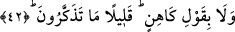

“Ve o” bazen sizlerin iddiâ ettiği gibi “bir şâir sözü değildir.” Kur’an’a ve onun
Allah’ın kelamı olduğuna ya da Peygamber (s.a.)’e ve onun Allah’ın katından
gönderilmiş bulunduğuna “ne kadar az inanıyorsunuz.” Âyette yer alan “az”lıktan
maksad, azlık değil yokluktur. Buna göre âyet-i kerîmenin mânâsı; “Siz hiç
inanmıyorsunuz” demektir. Bu ifâde, insanın ziyâretine hiç gelmeyen bir arkadaşına
dönüp de “bizi ne de az ziyârete geliyorsun” demesine benzer.
Fakir (Bursevî)’ye göre âyet-i kerîmede yer alan îman azlığı, müminlerin azlığı
dikkate alınarak söylenmiş de olabilir. Buna göre; “siz ne kadar az inanıyorsunuz”
demek, “sizin içinizde inananlar ne kadar azdır” anlamındadır. Buna benzer âyetleri de
aynı şekilde tefsir etmek mümkündür.
42. Bir kâhin sözü de değildir (o). Ne de az düşünüyorsunuz!
Bazen de iddiâ ettiğiniz gibi “o bir kâhin sözü de değildir.” Burada “kavl”
kelimesinin tekrar zâhir isim olarak zikredilmesi, onların hak olan Kur’an ve sâdık olan
peygamber hakkındaki yalan sözlerini iptal ve çürütme noktasındaki mübâlağa ve abartı
maksadıyladır. Yoksa bu ikinci âyette “kavl/söz” yerine onu ifâde eden bir zamir
kullanılabilirdi.
Âyetteki “kâhin” kelimesiyle kasdedilen; gelecek zamanda olacak şeyleri haber veren,
sırları bildiğini, gaybın bilgisini mütâlaa ettiğini iddiâ eden insandır.
Keşfu’l-esrar’da ifâde olunduğuna göre kâhin; kendisinin cinlerden hizmetçileri
bulunduğunu ve kendisine bir çeşit vahiy getirdiklerini iddiâ eden kimsedir. Kehânet
Peygamberimiz (s.a.)’den sonra ortadan kalkmıştır. Çünkü cinler gökteki sırları
dinlemekten men olunmuşlar ve bu hareketi yapmalarına engel olunmuştur.
Râğıb İsfahânî Müfredat isimli eserinde der ki: Kâhin, bize geleceğe âid haberleri
bildiren “arrâf” gibi, bir çeşit zan ile geçmişte gizli kalmış haberleri haber veren
kişidir. Bu iki sanat bazen doğru, bazen yanlış zanna dayalı oldukları için
Peygamberimiz (s.a.) şöyle buyurmuşlardır: “Kim bir arrâfa veya kâhine gelir de onun
dediğini tasdik ederse Allah’ın Muhammed’e indirdiğini inkâr etmiş sayılır.” [77]
İbn Melek’in Şerhu’l-meşârık isimli eserinde ifâde olunduğuna göre arrâf; çalınan
bir şeyi veya kaybolan nesnenin yerini insanlara haber veren kimsedir. Kâhin ise;
gelecekte olacakları haber verendir. es-Sıhah’a göre arrâf ile kâhin aynı anlamadır.
“Ne de az düşünüyorsunuz?” yâni ne kadar az düşünüyorsunuz ya da ne kadar az
zaman düşünüyorsunuz. Bir başka ifâdeyle, siz aslında hiç düşünmüyorsunuz.
Kâşifî demiştir ki; çok az öğüt alıyorsunuz, yâni öğüt alıcı değilsiniz. Keşfü’l-
esrâr’da şöyle gelmiştir; çok az öğüt kabul ediyorsunuz, az öğüt buluyorsunuz. Tâcü’l-
masâdir’de belirtildiğine göre “tezekkür”; zikretmek, söylemek, hatıra getirmek, öğüt